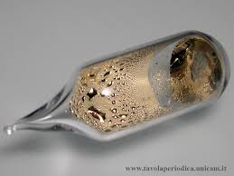

C'è una sperduta ma interessante località presso il lago Bernic, nel Manitoba (Canada).
Quando penso ad una sperduta località del Canada sempre associo l'idea ad un amico (che ora volteggia molto, molto in alto...) che andò in tempi non sospetti a fare il boscaiolo nelle foreste dell'Alberta.
Non a fare il cameriere a Londra come si usa oggi ma un po' più in là.
Arrivato in qualche maniera a Edmonton, prendeva un altro aeroplanino, e su, verso nord, ad abbattere infiniti abeti nel freddo boia che più boia non si può.
Povero Savino, non ne ha abbattuti tantissimi di abeti, ma pur è riuscito a rimanere semiraffreddato per il resto della vita...
Vicino al lago Bernic, dicevo, di interessante c'è una miniera, e a me le miniere intrigano in modo particolare e quando ne trovo una che mi sembra giusta ne parlo.
Poco tempo fa toccò al litio, che abbiamo scoperto derivare per una grandissima parte della produzione mondiale dai depositi salini di Atacama, in Cile.
Ma c'è un altro metallo alcalino ancora più interessante del litio per le sue origini estrattive: i due terzi delle sue riserve mondiali sono localizzate in un solo posto, laggiù vicino al lago Bernic. Incredibbbile!
Questo metallo, il cui nome significa "blù cielo" dal colore delle sue righe spettroscopiche osservate da Bunsen e Kirchoff che ne permisero la scoperta un secolo e mezzo fa, è il CESIO.
Il cesio, oltre ad essere molto raro, è un bel metallo quasi dorato, lucente come il mercurio e che diventa liquido solo a tenerlo in mano (ben chiuso in un'ampolla!), e così reattivo da esplodere letteralmente al contatto con l'acqua.

Se lo tocchi ti brucia, perchè la pelle contiene acqua e non c'è nulla come questa sostanza che impazzisca d'amore/odio per l'acqua.
Riguardo gli usi e le sue proprietà non ne parlo perchè si possono trovare in rete in lungo e in largo.
Nel Manitoba vi è un giacimento costituito da un colossale corpo di pegmatite granitica contenente minerali di cesio, litio e tantalio... e scusate se è poco!
I minerali sono principalmente pollucite (silicoalluminato di cesio e sodio (Cs,Na)2Al2Si4O12·H2O), spodumene (silicato di litio e alluminio LiAlSi2O6) e wodginite (ossido multiplo di manganese, stagno, tantalio e niobio Mn,(Sn,Ta)(Ta,Nb)2O8).
Il deposito, scoperto nel 1929, è da decenni la principale fonte mondiale di cesio e si stima, considerando un consumo complessivo di metallo di circa 30 tonnellate all'anno, che la miniera potrà fornire ancora risorse per un altro paio di millenni (!), rappresentando appunto circa due terzi delle riserve totali del pianeta.
L'estrazione del cesio dai suoi minerali è una operazione lunga e complessa, che porta alla fine a sali dai quali il metallo è preparato per riscaldamento sotto vuoto con calcio o bario o addirittura per elettrolisi del cianuro CsCN fuso; il suo prezzo "all'ingrosso" diciamo così, si aggira sulla decina di euro al grammo.
Val sicuramente la pena di accennare ad un suo impiego particolarissimo ed insospettato, nonostante il suo alto costo: salificato con l'acido formico (formiato di cesio HCOOCs) viene usato in grande quantità per il confezionamento dei fanghi per le perforazioni petrolifere.
Grazie all'altissima densità e proprietà delle sue soluzioni esse permettono, oltre alla lubrificazione dello scalpello e la rimozione dei residui di roccia, soprattutto la stabilità del pozzo fino alla sua tubatura, e senza particolari problemi ambientali.
-------------

E per concludere come il solito con qualcosa di pratico, ecco una vecchissima fotocellula che ho riesumato facendo un po' di scavi archeologici nello scatolone delle mie valvole elettroniche.
Si tratta di una Metal FC-2100, al cesio naturalmente.